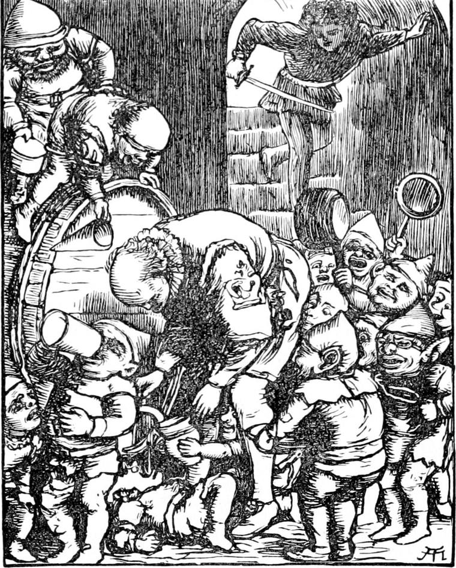

When Curdie fell asleep he began at once to dream. He thought he was ascending the Mountainside from the mouth of the mine, whistling and singing 'Ring, dod, bang!' when he came upon a woman and child who had lost their way; and from that point he went on dreaming everything that had happened to him since he thus met the princess and Lootie; how he had watched the goblins, how he had been taken by them, how he had been rescued by the princess; everything, indeed, until he was wounded, captured, and imprisoned by the men-at-arms. And now he thought he was lying wide awake where they had laid him, when suddenly he heard a great thundering sound.
'The cobs are coming!' he said. 'They didn't believe a word I told them! The cobs'll be carrying off the princess from under their stupid noses! But they shan't! that they shan't!'
He jumped up, as he thought, and began to dress, but, to his dismay, found that he was still lying in bed.
'Now then, I will!' he said. 'Here goes! I am up now!'
But yet again he found himself snug in bed. Twenty times he tried, and twenty times he failed; for in fact he was not awake, only dreaming that he was. At length in an agony of despair, fancying he heard the goblins all over the house, he gave a great cry. Then there came, as he thought, a hand upon the lock of his door. It opened, and, looking up, he saw a lady with white hair, carrying a silver box in her hand, enter the room. She came to his bed, he thought, stroked his head and face with cool, soft hands, took the dressing from his leg, rubbed it with something that smelt like roses, and then waved her hands over him three times. At the last wave of her hands everything vanished, he felt himself sinking into the profoundest slumber, and remembered nothing more until he awoke in earnest.
The setting moon was throwing a feeble light through the casement, and the house was full of uproar. There was soft heavy multitudinous stamping, a clashing and clanging of weapons, the voices of men and the cries of women, mixed with a hideous bellowing, which sounded victorious. The cobs were in the house! He sprang from his bed, hurried on some of his clothes, not forgetting his shoes, which were armed with nails; then spying an old hunting-knife, or short sword, hanging on the wall, he caught it, and rushed down the stairs, guided by the sounds of strife, which grew louder and louder.
When he reached the ground floor he found the whole place swarming.
All the goblins of the mountain seemed gathered there. He rushed amongst them, shouting:
Hit and hew!
Three, four,
Blast and bore!'
and with every rhyme he came down a great stamp upon a foot, cutting at the same time their faces—executing, indeed, a sword dance of the wildest description. Away scattered the goblins in every direction—into closets, up stairs, into chimneys, up on rafters, and down to the cellars. Curdie went on stamping and slashing and singing, but saw nothing of the people of the house until he came to the great hall, in which, the moment he entered it, arose a great goblin shout. The last of the men-at-arms, the captain himself, was on the floor, buried beneath a wallowing crowd of goblins. For, while each knight was busy defending himself as well as he could, by stabs in the thick bodies of the goblins, for he had soon found their heads all but invulnerable, the queen had attacked his legs and feet with her horrible granite shoe, and he was soon down; but the captain had got his back to the wall and stood out longer. The goblins would have torn them all to pieces, but the king had given orders to carry them away alive, and over each of them, in twelve groups, was standing a knot of goblins, while as many as could find room were sitting upon their prostrate bodies.
Curdie burst in dancing and gyrating and stamping and singing like a small incarnate whirlwind.
Never can be holes:
Why should their shoes have soles, sir,
When they've got no souls?
Has a granite shoe:
The strongest leather boot, sir,
Six would soon be through.'
The queen gave a howl of rage and dismay; and before she recovered her presence of mind, Curdie, having begun with the group nearest him, had eleven of the knights on their legs again.
'Stamp on their feet!' he cried as each man rose, and in a few minutes the hall was nearly empty, the goblins running from it as fast as they could, howling and shrieking and limping, and cowering every now and then as they ran to cuddle their wounded feet in their hard hands, or to protect them from the frightful stamp-stamp of the armed men.
And now Curdie approached the group which, in trusting in the queen and her shoe, kept their guard over the prostrate captain. The king sat on the captain's head, but the queen stood in front, like an infuriated cat, with her perpendicular eyes gleaming green, and her hair standing half up from her horrid head. Her heart was quaking, however, and she kept moving about her skin-shod foot with nervous apprehension. When Curdie was within a few paces, she rushed at him, made one tremendous stamp at his opposing foot, which happily he withdrew in time, and caught him round the waist, to dash him on the marble floor. But just as she caught him, he came down with all the weight of his iron-shod shoe upon her skin-shod foot, and with a hideous howl she dropped him, squatted on the floor, and took her foot in both her hands. Meanwhile the rest rushed on the king and the bodyguard, sent them flying, and lifted the prostrate captain, who was all but pressed to death. It was some moments before he recovered breath and consciousness.
'Where's the princess?' cried Curdie, again and again.
No one knew, and off they all rushed in search of her.
Through every room in the house they went, but nowhere was she to be found. Neither was one of the servants to be seen. But Curdie, who had kept to the lower part of the house, which was now quiet enough, began to hear a confused sound as of a distant hubbub, and set out to find where it came from. The noise grew as his sharp ears guided him to a stair and so to the wine cellar. It was full of goblins, whom the butler was supplying with wine as fast as he could draw it.

While the queen and her party had encountered the men-at-arms, Harelip with another company had gone off to search the house. They captured every one they met, and when they could find no more, they hurried away to carry them safe to the caverns below. But when the butler, who was amongst them, found that their path lay through the wine cellar, he bethought himself of persuading them to taste the wine, and, as he had hoped, they no sooner tasted than they wanted more. The routed goblins, on their way below, joined them, and when Curdie entered they were all, with outstretched hands, in which were vessels of every description from sauce pan to silver cup, pressing around the butler, who sat at the tap of a huge cask, filling and filling. Curdie cast one glance around the place before commencing his attack, and saw in the farthest corner a terrified group of the domestics unwatched, but cowering without courage to attempt their escape. Amongst them was the terror-stricken face of Lootie; but nowhere could he see the princess. Seized with the horrible conviction that Harelip had already carried her off, he rushed amongst them, unable for wrath to sing any more, but stamping and cutting with greater fury than ever.
'Stamp on their feet; stamp on their feet!' he shouted, and in a moment the goblins were disappearing through the hole in the floor like rats and mice.
They could not vanish so fast, however, but that many more goblin feet had to go limping back over the underground ways of the mountain that morning.
Presently, however, they were reinforced from above by the king and his party, with the redoubtable queen at their head. Finding Curdie again busy amongst her unfortunate subjects, she rushed at him once more with the rage of despair, and this time gave him a bad bruise on the foot. Then a regular stamping fight got up between them, Curdie, with the point of his hunting-knife, keeping her from clasping her mighty arms about him, as he watched his opportunity of getting once more a good stamp at her skin-shod foot. But the queen was more wary as well as more agile than hitherto.
The rest meantime, finding their adversary thus matched for the moment, paused in their headlong hurry, and turned to the shivering group of women in the corner. As if determined to emulate his father and have a sun-woman of some sort to share his future throne, Harelip rushed at them, caught up Lootie, and sped with her to the hole. She gave a great shriek, and Curdie heard her, and saw the plight she was in. Gathering all his strength, he gave the queen a sudden cut across the face with his weapon, came down, as she started back, with all his weight on the proper foot, and sprung to Lootie's rescue. The prince had two defenceless feet, and on both of them Curdie stamped just as he reached the hole. He dropped his burden and rolled shrieking into the earth. Curdie made one stab at him as he disappeared, caught hold of the senseless Lootie, and having dragged her back to the corner, there mounted guard over her, preparing once more to encounter the queen.
Her face streaming with blood, and her eyes flashing green lightning through it, she came on with her mouth open and her teeth grinning like a tiger's, followed by the king and her bodyguard of the thickest goblins. But the same moment in rushed the captain and his men, and ran at them stamping furiously. They dared not encounter such an onset. Away they scurried, the queen foremost. Of course, the right thing would have been to take the king and queen prisoners, and hold them hostages for the princess, but they were so anxious to find her that no one thought of detaining them until it was too late.
Having thus rescued the servants, they set about searching the house once more. None of them could give the least information concerning the princess. Lootie was almost silly with terror, and, although scarcely able to walk would not leave Curdie's side for a single moment. Again he allowed the others to search the rest of the house—where, except a dismayed goblin lurking here and there, they found no one—while he requested Lootie to take him to the princess's room. She was as submissive and obedient as if he had been the king.
He found the bedclothes tossed about, and most of them on the floor, while the princess's garments were scattered all over the room, which was in the greatest confusion. It was only too evident that the goblins had been there, and Curdie had no longer any doubt that she had been carried off at the very first of the inroad. With a pang of despair he saw how wrong they had been in not securing the king and queen and prince; but he determined to find and rescue the princess as she had found and rescued him, or meet the worst fate to which the goblins could doom him.